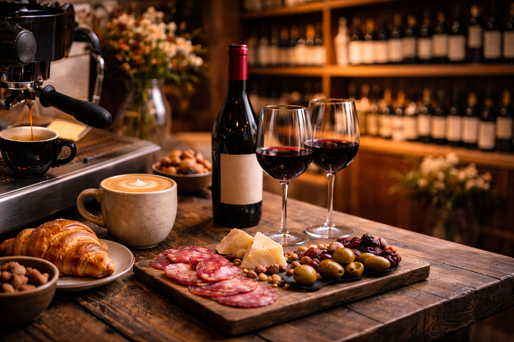

Hoy en la casa
Happy hour de 18 a 20 hs. y una carta diseñada para compartir sin vueltas.

Mercato de encuentro · Pueblo Esther
Café, vino y cocina cotidiana para quedarse más tiempo del que pensabas.
Hoy en la casa
Happy hour de 18 a 20 hs. y una carta diseñada para compartir sin vueltas.
Lombardo nace para reunir.
Desayunos extensos, café de especialidad, una selección de vinos por copa y encuentros que pasan de la tarde a la noche con naturalidad.
Entre barrio y diseño, Lombardo combina una identidad cercana con una propuesta gastronómica cuidada para Pueblo Esther.


Pueblo Esther, Santa Fe, Argentina.
Horarios
Agregar horarios actualizados.
Venís por una copa y te quedás por el momento.
Consultanos por eventos privados, celebraciones o propuestas para grupos.